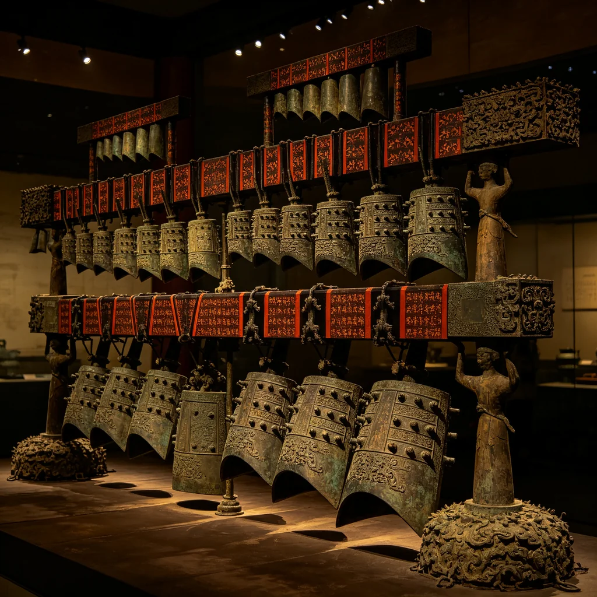
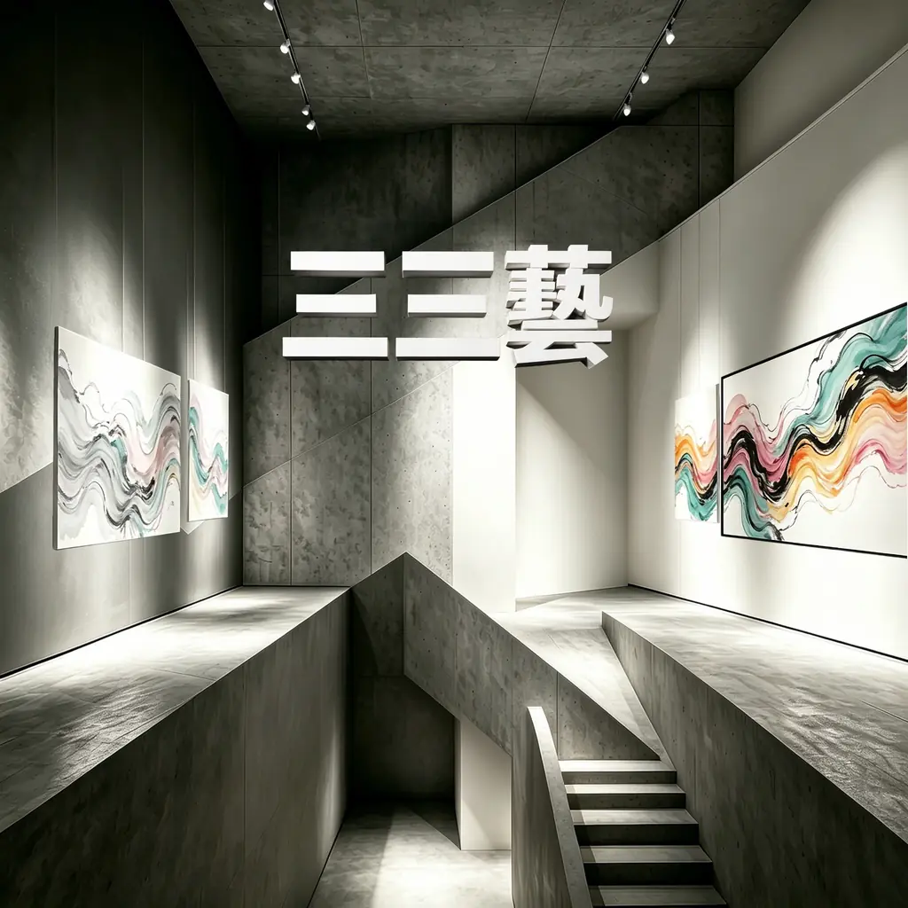
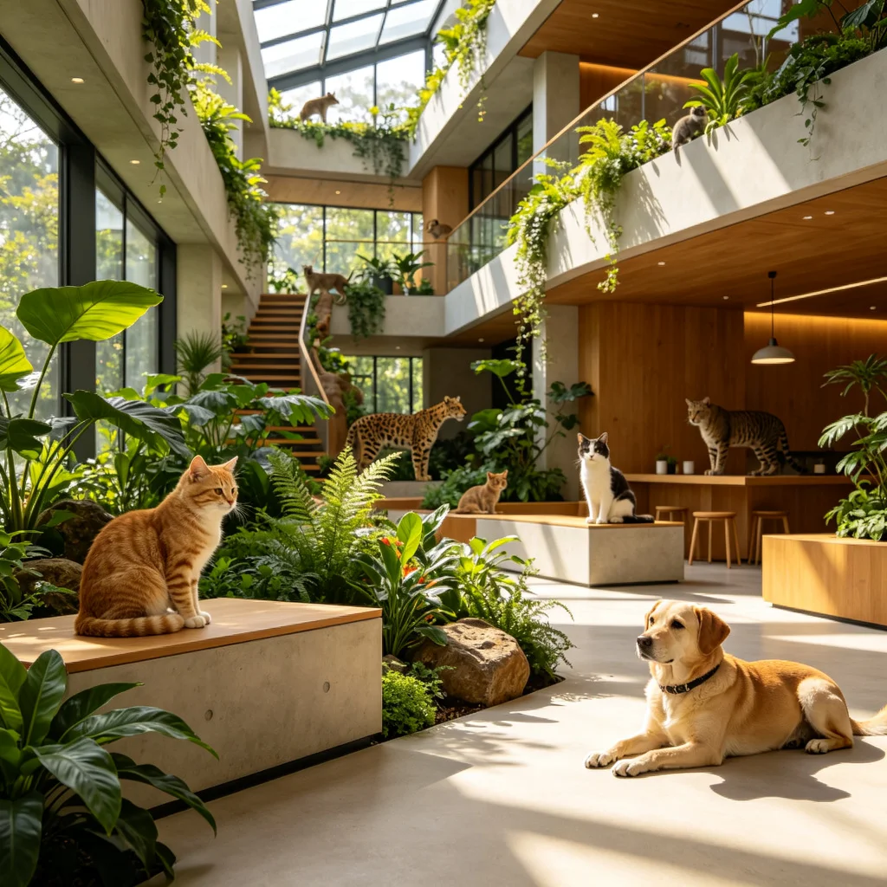
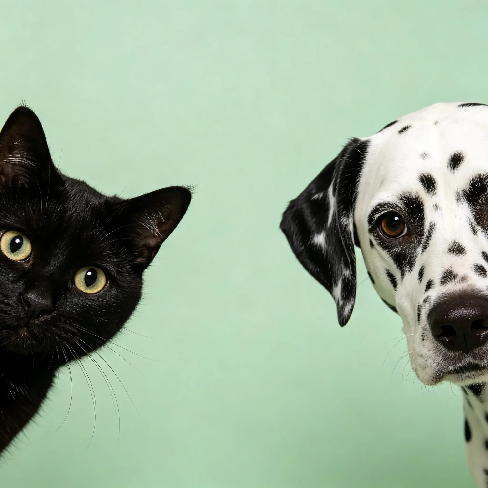
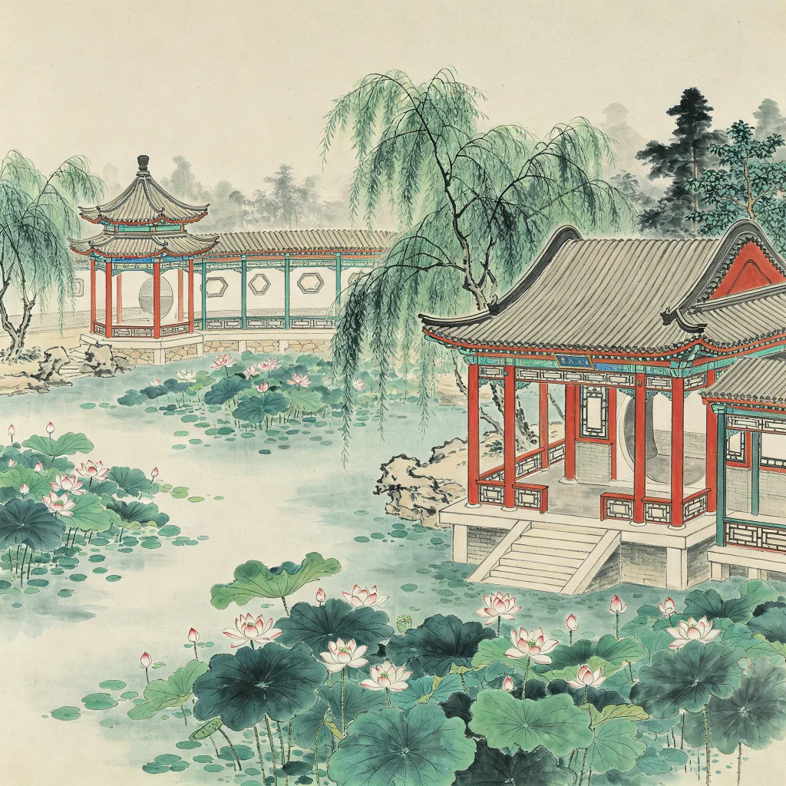
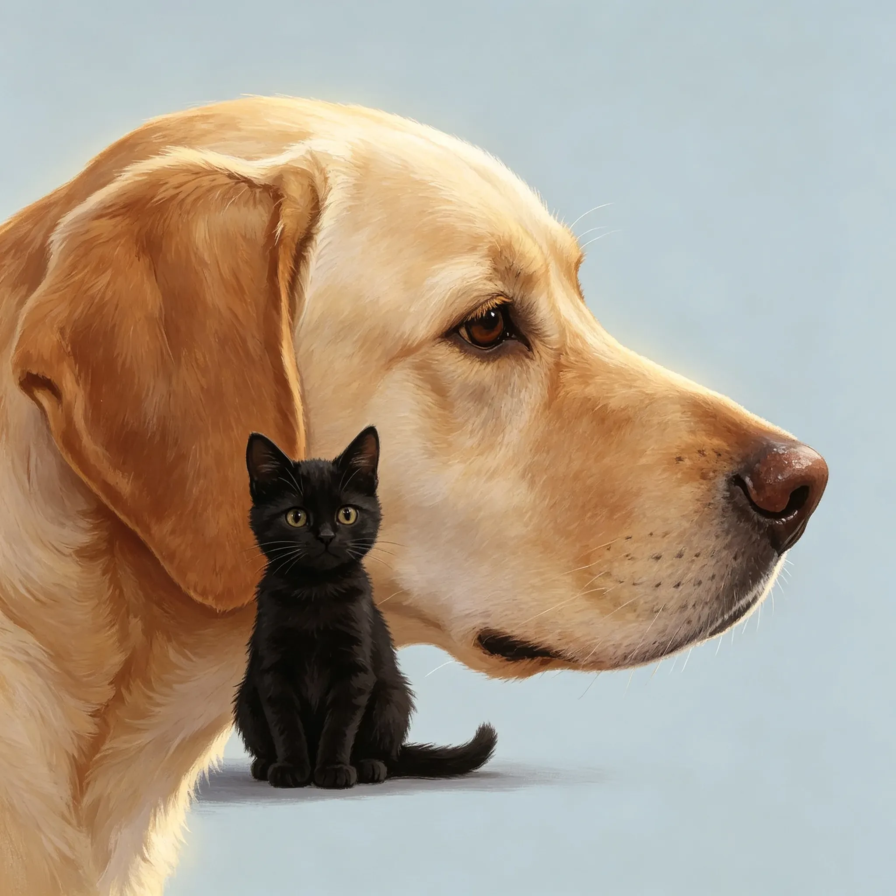
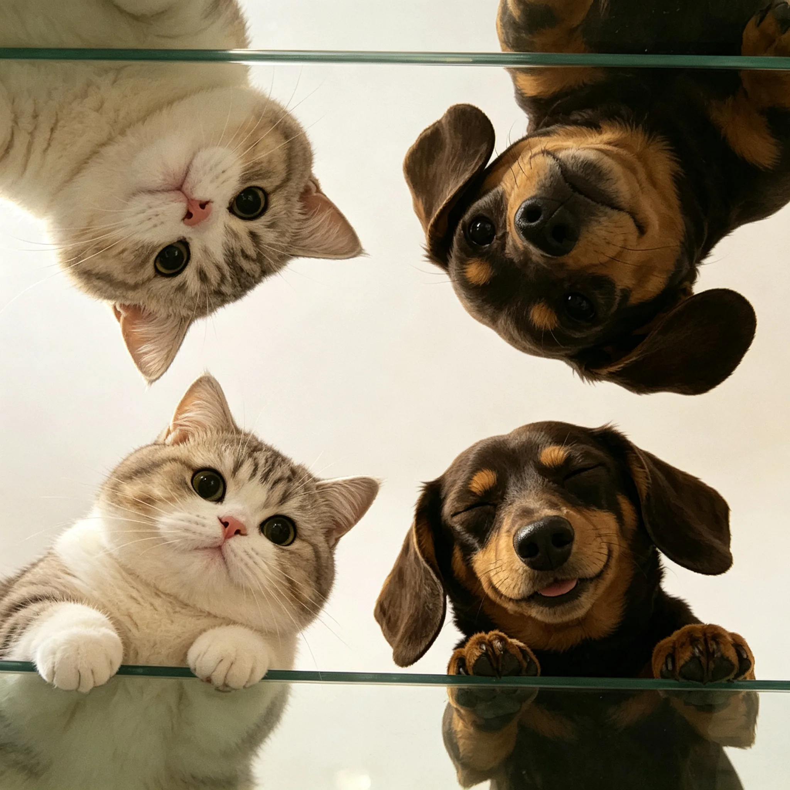
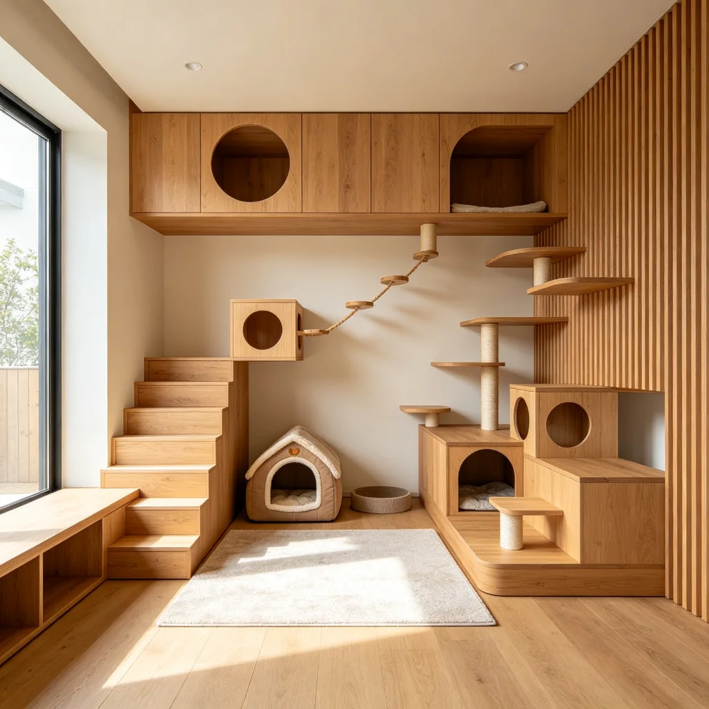
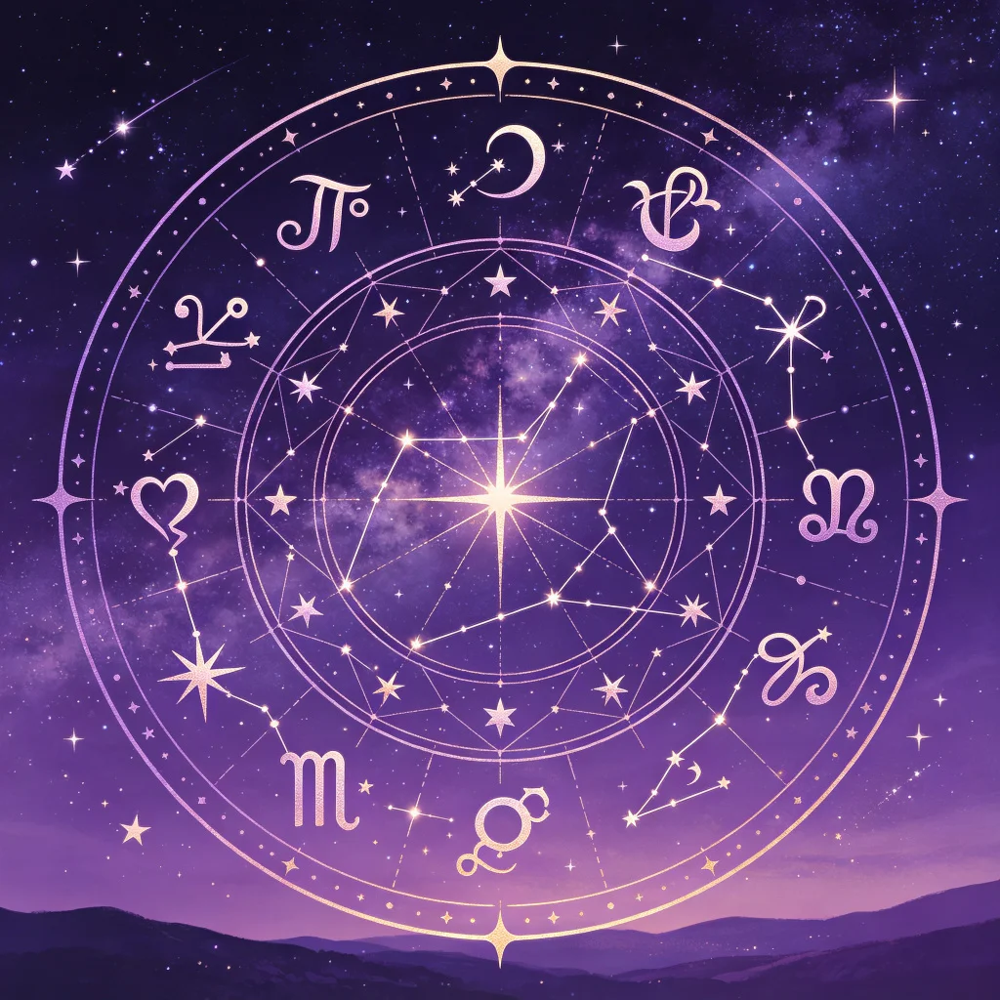
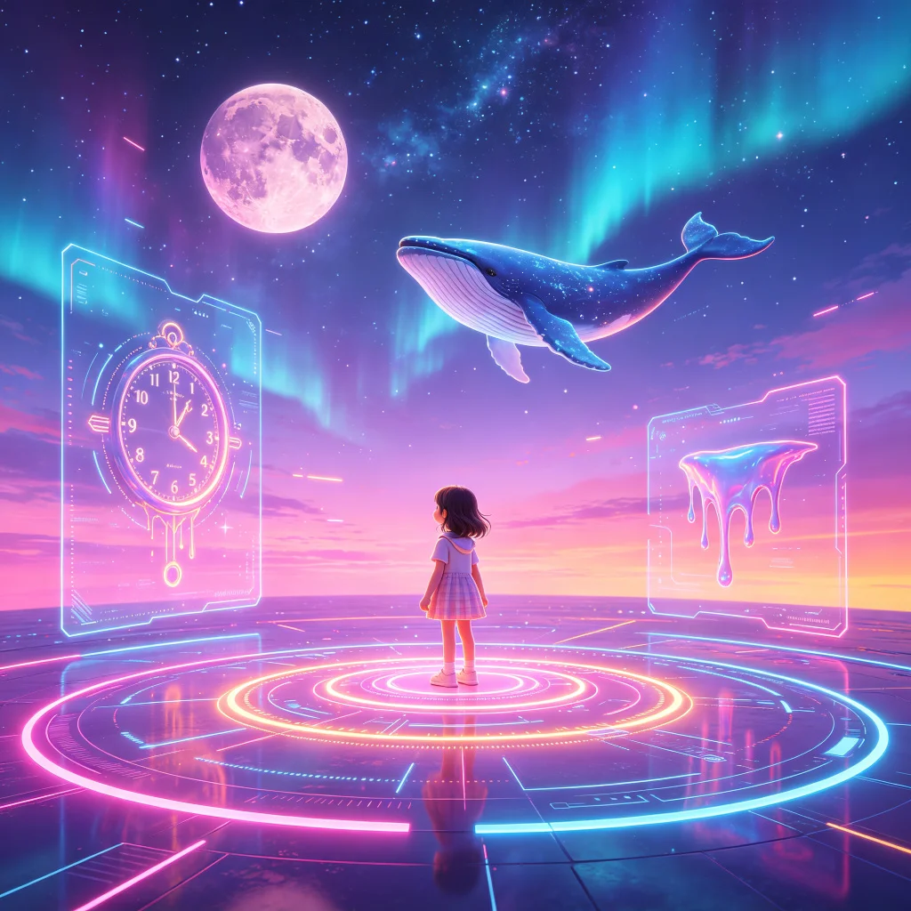

欣矩陣 ∞ 欣媒體：沒有做不到，只有想不到。跨產業垂直站點全面佈局，涵蓋產業情報、知識庫、商品展示與數位行銷，一站導入全網流量、SEO 優化、內容自動更新，協助品牌擴大網路聲量，打通曝光、獲客、數據回饋完整閉環，完成你的數位佈局。

01出土於湖北隨州的戰國早期青銅禮樂重器，65件編鐘音域跨五個半八度，一鐘雙音，改寫世界音樂史的驚世發現。
zeng-hou-yi-bells一百位金庸江湖人物的心理畫像，用現代心理學透視刀光劍影之外的愛恨情仇與人格底色。
jinyong-psychology
03當代藝品展售與藝術家平台，以數位畫廊的形式呈現精品藝術收藏，匯聚兩岸三地新銳與資深藝術家作品。
331.today
04毛孩與空間的對話。
zootecture.com
05用邏輯理解毛孩。
petlogic.org台灣房地產資訊與建案資料平台，提供最完整的房屋交易、行情與區域分析，是購屋與投資者的專業參考入口。
9return.com.tw當瑞士心理學大師榮格遇見東方易經智慧，探索集體潛意識與卦象的神秘對話
會員制 ∞ 第一版更新中
08以紅樓夢為本，還原大觀園的亭台樓閣、山水庭院，見證古典園林的詩意空間。
hongloumeng從十大古代經典文獻還原中國古典建築之美，探索斗拱飛簷與營造法式的千年智慧。
classic-architecture
10寵物品種圖鑑百科。
vocus.cc/salon/zootecture
11寵物照護知識學堂。
vocus.cc/salon/petlogic
12寵物友善室內設計靈感，貓狗與人共享的美好空間，從寵物窩到互動設施一次滿足。
會員制 ∞ 第一版更新中AR增強現實虛擬試衣，線上即時預覽服裝穿搭效果，數位人台與智慧尺寸推薦，打造沉浸式購物體驗。
會員制 ∞ 第一版更新中透過遊戲化方式學習經濟學原理，從供需法則到賽局理論，在互動中理解市場運作與決策邏輯。
會員制 ∞ 第一版更新中
15十二星座星圖解析、每日運勢、紫微斗數與占星術結合，探索星象與人性的神秘對應。
會員制 ∞ 第一版更新中以三國經典戰役解析賽局理論，從空城計到連環計，探索兵法謀略背後的博弈數學與決策智慧。
會員制 ∞ 第一版更新中回歸物物交換的純粹樂趣，社區共享經濟平台，讓閒置物品找到新主人，永續又好玩。
會員制 ∞ 第一版更新中
18走進Infucoco的奇幻世界，獨角獸、彩虹與雲朵共築的夢幻國度，釋放無限想像力與創造力。
會員制 ∞ 第一版更新中探索音樂家的怪癖與天才，從爵士到古典，解構音符背後的靈魂與不為人知的創作祕辛。
會員制 ∞ 第一版更新中在玫瑰花園中尋找心靈療癒，以芳香與自然撫慰日常疲憊，打造屬於你的舒心角落
會員制 ∞ 第一版更新中超越視覺的靈性感知，探索直覺、第六感與內在智慧的神秘力量，看見眼睛看不到的真相
會員制 ∞ 第一版更新中LV、Gucci、Hermès、Chanel…世界精品品牌的正確發音教學，從此不再唸錯鬧笑話
會員制 ∞ 第一版更新中